Final
思维导图（简）#
- 供求理论
- 曲线
- 曲线变动，加总
- 均衡
- 税收
- 商品类型 jf dd sc
- 弹性理论
- 需求价格弹性公式及推导结论
- 价格交叉弹性
- 基数效用理论
- 均衡条件，边际效用，最后一块钱
- 一定预算的效用最大化
- 序数效用理论
- 无差异曲线，预算线
- 均衡条件，相切
- 企业的生产
- 短期长期问题
- 边际技术替代率，边际替代率递减
- 一定成本的产量最大化
- 企业的成本
- 一定产量的成本最小化
- MC AC TC
- SFC SVC AVC ATC
- 生产均衡，利润最大化 \(MR=MC\)
- 一定产量的成本最小化
- 完全竞争市场
- 自由进出，信息对称，产品同质，份额微不足道
- 均衡条件 \(P=SMC,\; P=LMC=LAC\)
- 短期
- 是否停工的问题 \(AVC_{min}\)
- 长期
- 经济成本为 0，没有超额利润，效率最高
- 垄断市场
- 门槛高，信息不对称，单个厂商
- 利润最大化 \(P>MR=SMC,\;P>MR=LMC\,and\,P>LAC\)
- 消费者剩余被掠夺
- Dead Weight Loss 社会净福利损失
- 效率最低：高价低产
- 垄断竞争和寡头垄断
- 垄断竞争
- 自由进出、产品有差异、信息对称、份额微不足道
- 长期没有超额利润 超额利润就是经济利润
- 均衡条件 \(P>MR=SMC,\;P>MR=LMC\,and\,P=LAC\)
- 主观需求曲线
- 寡头垄断
- 有门槛，信息不确定，份额巨大
- 博弈论
- 纳什均衡：给定别人的选择，能最大化自己收益的选择
- 支配均衡（最优均衡）：不论别人的选择，总是能最大化自己收益的选择
- 支配均衡必然是纳什均衡，纳什均衡不一定是支配均衡
- 寡头竞争模型
- 产量竞争模型
- 古诺模型：无勾结，市场需求是都已知的直线，假定对方产量不变，各自计算利润最大化 反应函数
- 斯坦克贝模型：老练寡头根据天真寡头的反应函数进行自己的利润最大化
- 价格竞争模型
- 贝尔特兰模型：退化到完全竞争模式，双方各自降价直到 \(P=MC\)
- 斯威齐模型：价格刚性：寡头垄断市场的价格比较稳定
- 假设：寡头降价，其他企业也降价；寡头涨价，其他企业不涨价，变成初始价格处分段的函数
- 产量竞争模型
- 勾结
- 价格领导制，暗中勾结
- 晴雨表厂商：准确的判断力
- 支配性厂商：规模较大
- 最低成本厂商：最低成本
- 卡特尔 整合成一家大型厂商，退化成完全垄断
- 内部分配利益问题
- 卡特尔不稳定
- 价格领导制，暗中勾结
- 垄断竞争
- 要素市场
- 间接的需求，厂商对生产要素的需求是因消费者对产品的需求而引申出来的
- 一般均衡与福利经济学
- 局部均衡：某一产品或要素市场的均衡
- 一般均衡（瓦尔拉斯）：所有市场同时达到均衡
- 帕累托最优
- 交换的一般均衡、生产的一般均衡，生产和交换的契约线
- \(MRS^A_{XY}=MRS^B_{XY}\)
- \(MU_X^A/MU_Y^A=MU_X^B/MU_Y^B\)
- 市场失灵
- 原因
- 外部性
- 垄断
- 公共产品
- 不完全信息与信息不对称
- 原因
易错点#
- basic
-
弹性
-
需求价格弹性 \(\(E_d=\frac{dQ_d/Q_d}{dP/P}\)\)
-
需求收入弹性 \(\(E_m=\frac{dQ/Q}{dM/M}\)\)
-
（需求）交叉价格弹性 \(\(E_c=\frac{dQ_X/Q_X}{dP_Y/P_Y}\)\)
-
供给弹性 \(\(E_s=\frac{dQ_s/Q_s}{dP/P}\)\)
-
（商品的）替代率注意上下分别是什么，前下后上 \(\(MRS_{1,2}=-\frac{dQ_2}{dQ_1}=-\frac{MU_1}{MU_2}\)\)
-
边际技术替代率 \(\(MRTS_{L, K}=-\frac{dK}{dL}|_{Q不变}\)\)
-
-
教材简答题笔记#
第二章 价格机制#
谷贱伤农和薄利多销#
谷贱伤农，因为粮食属于正常品中的必需品，无论它的价格如何变动，它的需求量是一定的,所以它的价格弹性小.当粮食丰收，粮食的价格会下降，但相应的粮食的需求量变化不大,所以农民的收入反而少了。
薄利多销，指针对一些价格弹性较大的商品，商家以减少利润的方式进行促销。当厂家降价时无疑降低了商品的价格，因为商品的价格弹性大，所以消费者必将增加对其的购买.从而迎合了商家多销的目的。
大学入学需求是否缺乏弹性#
如果需求是确定的，每一个体 (一所大学) 可以根据提高价格与关注销售数量变动来自行确定需求曲线。大学官员没有观察整体的需求曲线,而是注重看 15 年来的均衡价格和数量。假定需求曲线是向上倾斜，供给曲线向下倾斜，需求弹性可以是任何一个值.需求曲线可能向上移动，因为大学教育的价值增长了并且学生愿意为每一个机会 (或者交易）支付更高的价格。更多的市场研究将会支持需求对价格完全无弹性的结果.
接受观点，但是指出证据不够充分可能是更好的答案
弧弹性计算要用中点，有时候要使用弧弹性计算变化量#
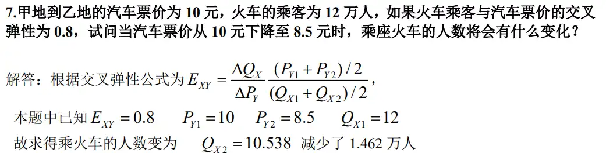
实际中，市场价格是怎么决定的#
- 供给和需求曲线共同决定市场价格
票贩子为什么打击不尽？#
- 国家采取价格限制
- 什么是价格限制？
- 价格限制的结果：供不应求，排队，黑市交易
- 票贩子属于黑市，由于市场一直有利可图，所以屡禁不止
投机是好还是坏？为什么？#
- 好
- 投机是指不为从事生产和消费而仅为赚钱进行的买卖活动
-
- 可以 * 在空间上调剂余缺，能真正节约生产成本，从而创造价值
-
- 稳定价格，在价格低时购入，防止价格进一步降低；在价格高时卖出，防止价格进一步上涨
-
- 为其他有关的经济活动提供了准确的价格信号，可以准确计算出盈亏结果
我国政府对粮食实行支持价格还是限制价格？为什么？#
- 改革前，限制价格
- 什么是限制价格
- 目的：稳定生活必需品价格，保护消费者权益，有利于安定民心，利于以农补工政策
- 改开后，支持价格
- 什么是支持价格
- 目的：保障农民权益，调动农民生产积极性
经济学角度分析如何减少迷幻商品？#
- 直接立法执法效果有限
- 供给减少，价格抬高，有利可图
- 要怎么做
- 宣传教育，降低需求，更加有效
为什么化妆品可以薄利多销而药品不可以#
- 需求价格弹性角度，弹性大的可以薄利多销增加销售额，弹性小的会减少销售额
必需品和奢侈品哪个队社会发展可能更重要些？为什么？#
- 奢侈品
- 奢侈品需求收入弹性大，收入变化时需求变化幅度大。
- 人们收入增加后，对奢侈品的需求会大幅上升，能够拉动内需、存进经济发展
- 而必需品的需求弹性很小，对内需拉动的作用小
第三章 消费者行为#
请解释亚当·斯密提出的“价值之谜”——⽔的使⽤价值很⼤，⽽交换价值却很⼩；钻⽯的使⽤价值很⼩，但交换价值却很⼤。#
商品的价格会受边际价格影响（最后一单位的效用）.水的供给是远大于钻石，根据边际效益递减规律，虽然口渴的时候第一口水珍贵无比，但随着水的供给的增加，水就不值钱了。但是钻石由于其稀少性,保持着昂贵的价格。
基数和序数对消费者均衡的解释有何异同#
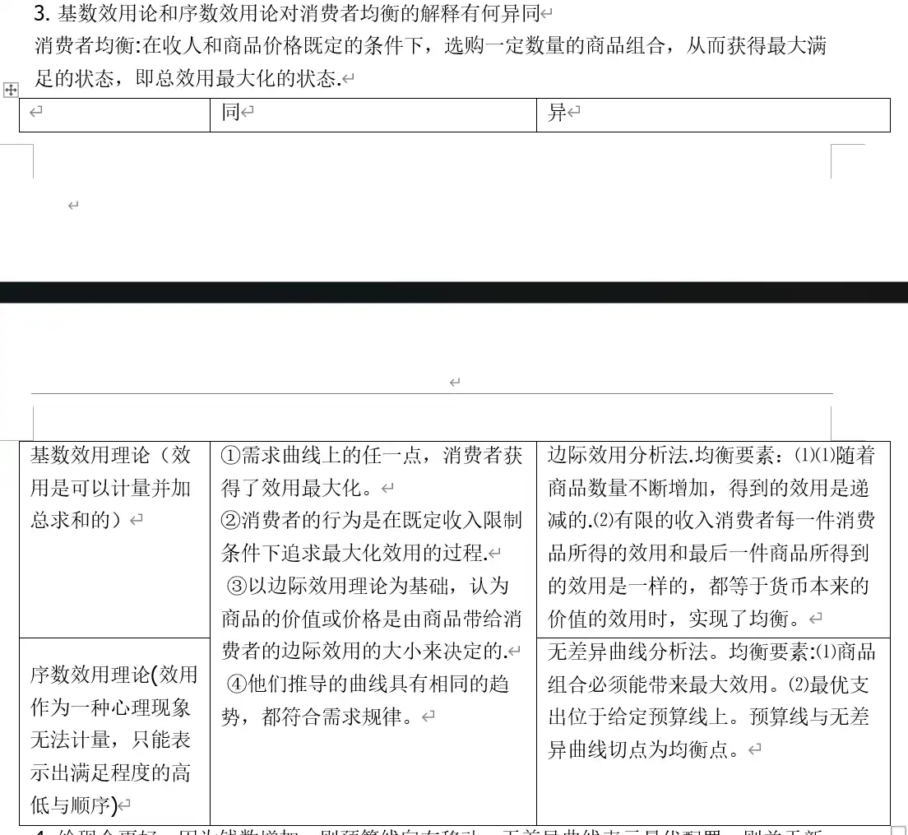
求解替代效应和收入效应大小问题#
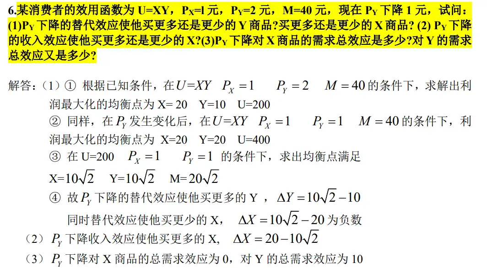
- 首先求出原来的均衡和新的均衡
- 然后令 U 不变（同一条无差异曲线），计算得到替代效应的作用点
- 与原来的均衡比较得到替代效应
- 与新的均衡比较得到收入效应
为什么边际效⽤是递减的？是否存在边际效⽤递减规律的反例呢？#
- 一定时间内消费某种商品，欲望强度会逐渐减弱，随着数量增加达，满足到饱和状态，欲望减弱到最低限度
- 所以每一单位增量带来的满足感或效用会越来越小
- 存在反例，对一项事物有特殊爱好的人来说，他喜爱的消费品并不符合边际效应递减的原理，例如集邮
穷⼈与富⼈的货币的边际效⽤哪个⾼？为什么？这给你什么启⽰？ 联系试卷原题#
根据边际效益递减理论，随着数量的增加，边际效应会越来越小，富人拥有比穷人更多的财富,数量大，边际效应小。为增加全社会的总效用，根据消费者均衡条件（即每种物品的边际效用与价格之比相同)，政府应该向富人征税，并通过转移支付的方式给穷人。
为什么⼯资上升，有⼈会增加⼯作时间⽽另⼀些⼈会减少⼯作时 间？或者对于同⼀⼈开始时增加⼯作时间，⽽随着⼯资的继续上升会 减少⼯作时间？#
把闲暇和收入看做某人要选择的两样商品 (画出无差异曲线)。当收入增加时，闲暇的机会成本上升了，这样就会鼓励他多工作.这就是替代效应。再来考虑收入效应,当工资增加时，预算线向右移动，随着收入的增加，他就更倾向于享受更多闲暇。换句话说，收入效应导致工作时间减少。
政府对利息征税为什么不 ⼀定能促进消费？#
把未来消费和现期消费看做某人要选择的两样商品（画出无差异曲线）。对利息征税，从替代效应看，储蓄的实际利息率下降，相对于未来消费而言，储蓄的收益或现期消费的机会成本降低了，人们增加现在消费而减少未来消费；从收入效应看，实际收入下降，移动到降低的无差异曲线，只要两个时期的消费为正常商品，人们减少现在消费,增加储蓄。所以最后的结果取决于收入效应和替代效应的大小比较。
- 简单来说，就是利息降低，而利息是当下消费的机会成本，所以机会成本降低，替代效应使得人们增加当下消费，减少未来消费
- 从收入效应分析，由于利息减少，引起了收入的减少，人们会减少当下消费
- 但是哪个作用更大不好判断，所以最后的结构取决于两种效应大小的比较
- 如果收入效应大于替代效应，则不能促进消费，政府应当合理调整税率
为什么许多商品可以讨价还价，⽽另⼀些商品却不允许讨价还价？#
- 可以讨价还价的商品
- 如果商品富有需求弹性，则可以通过讨价还价中的降价来吸引消费者，增加销售收入
- 这同时也保留了愿意高价购买的消费者和愿意讨价还价的消费者，实现了二级价格歧视，有利于利润最大化
- 不能讨价还价的商品
- 生产者剩余接近于 0，多发生在竞争比较充分的市场上，讨价还价会导致亏损
- 商品缺乏需求弹性，讨价还价会减少销售收益
第四章 生产者行为#
短期生产函数与长期生产函数的区别就在于是否所有自变量都可以变化#
短期⽣产的三区间是如何划分的，为什么企业只会在第Ⅱ区间选择 投⼊？#
- 画图，画出三个区间并解释
- 分别对比三个区间，指出为什么在第二区间
单个⽣产要素的边际收益递减与规模收益不变⽭盾吗？为什么？#
不矛盾，两者是不同概念.规模收益问题分析的是企业的生产规模变化与所引起的产量变化之间的关系。假定生产中的全部生产要素都以相同的比例发生变化，指所有生产要素按同一比例变化从而使生产规模发生变化时，引起产量变动的规律性。在企业的规模从很小开始逐步扩大的过程中,会顺次呈现出规模收益递增、不变和递减三个阶段。如果产量增加的比例等于各种生产要素增加的比例，则为规模收益不变。而“边际收益递减规律”是指当其他生产要素不变（即生产规模不变）时，由一种要素投入的增减带来的产量变动的规律。
⼀家企业的⽣产函数随着产出的增加是否可能出现规模收益递增、 规模收益不变、规模收益递减三种情况？#
会.规模收益的递增、不变和递减体现的是产量增加的比例与各种生产要素增加的比例的关系.产量增加的比例大于各种生产要素增加的比例，则为规模收益递增,等于则为规模收益不变，小于则为规模收益递减，规模收益递减不等于产出的减少。一般说来，在企业的规模从很小开始逐步扩大的过程中，会顺次呈现出规模收益递增、不变和递减三个阶段。开始时,厂商的扩大规模，会使收益增加,因而规模收益是递增的.但当厂商的规模扩大到一定程度后,厂商内部分工受到破坏,各个生产部门的协调失灵，从而表现为规模收益递减。
在 ⼀条既定的等产量曲线上，为什么随着劳动对资本的不断替代， 边际技术替代率 MRTSLK 是递减的？#
边际技术替代率之所以会出现递减趋势，是由于边际产量递减规律发挥作用的结果。在产量保持不变的条件下，随着一种要素的增加，另一种要素会减少。由于边际产量是递减的，当某种要素增加一单位时,所引起的产量增加量是逐渐减少的,在维持产量不变的条件下，该要素所替代的其他要素数量就会减少。
私营企业主⼀般要承担哪些显性成本和隐性成本？在购买或租借⾃ ⾝没有的⽣产要素时，必须⽀付什么样的价格？#
- 显性成本：会计成本，原材料、人工、库存、运输、售后服务
- 隐性成本：经济成本减去会计成本，设备折旧、行政管理效率低效、没有转移经营方向的机会成本
- 需要支付
SAC LAC#
原理:LAC 是在相同产量条件下从所有不同规模的企业中选择最低平均成本,而不是在某一确定规模的企业中选择最低的平均成本。明在“长期”中存在着企业生产能力利用不足 (或过度利用）的问题。
填表#
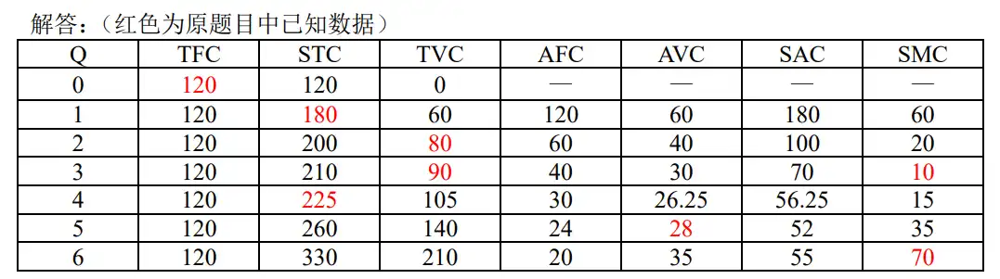
互联网是否符合边际收益递减规律，为什么？ 这是开放题吧#
- 不符合
- 互联网的联通节点越多，其总效果越大，总收益越大
企业的规模是否越⼤越好？为什么？#
- 从规模收益递增，递减的角度解释
- 从规模收益递减的原因解释
企业实现 ⽣产要素最适组合时⼀定实现了利润最⼤化吗？为什么？#
是。厂商的利润最大化归结为既定成本下的产量最大化或者产量既定下的成本最小化。生产要素最适组合一般是指劳动力 L 和资本 K 这两个生产要素在总产量为常数 Q 恒定不变时的成本最小化; 或是指在总生产成本 C 为常数时的产量 Q 的最大化。两者是同一概念.
城市化与⼟地上劳动的边际收益递减有关系吗？#
有关系
信息产品的成本结构具有什么特征？#
- 第一单位的边际成本很高，因为涉及到开发、撰写等成本
- 此后的边际成本只有信息载体（如印刷、刻录、发行）的成本
- 但是为了支付前期开发成本，最终价格不会等于边际成本
如何⽤机会成本概念来说明贸易的产⽣？#
- 机会成本是指把一定的经济资源能用于生产某种产品时放弃的另一些产品生产上的最大收益
- 一种生产资源的价值取决于其不同的用途所能产生的价值之间的比较，人们在选择生产资源的用途时，就要考虑到机会成本的问题，所以生产资源才会流到经济效益高的涩会给你产用途上去，从而产生了贸易
第五章 完全竞争市场#
完全竞争的含义#
- 非常多厂商和消费者
- 市场自由进出
- 信息对称且完全
- 产品完全同质
“在⻓期均衡点，完全竞争市场中每个⼚商的利润都为零。因⽽， 当价格下降时，所有这些⼚商就⽆法继续经营。”你是否同意这⼀观 点，请说明理由。#
- 不同意
- 长期中每家厂商都可以调整规模，从而不断调整到最适规模，当价格下降时，会减小规模使得价格回到原来的水平
- 另外，由于完全竞争市场自由进出，长期来看，如果出现了价格下降，就会有厂商退出市场，减少供给，价格就会回升到原来的水平
完全竞争⾏业的短期供给曲线是该⾏业中⼚商的短期供给曲线的⽔ 平相加，能否说该⾏业⻓期供给曲线也是该⾏业中⼚商的供给曲线的 ⽔平相加？#
- 当长期行业沿着供给曲线进行调整时，存在厂商进入或退出市场
- 对于成本递增或递减的行业来说，厂商的边际成本曲线本身也会由于投入品的价格变化而移动
- 因此，不能进行加总
如果⾏业中每个⼚商都处于⻓期均衡状态，整个⾏业是否必定处于 ⻓期均衡状态，反之是否亦然？如果⼚商和⾏业都处于⻓期均衡状 态，它们是否必然处于短期均衡状态？反之是否亦然？#
关键在于，单个企业的长期均衡只要求 \(P=SMC=LMC\)，但是整个市场必须在没有经济利润的 \(P=SMC=LMC=SAC=LAC\) 才能均衡
（1）如果行业中每个企业都处于长期均衡状态，则 P=SMC=LMC。但是整个行业处于长期均衡状态的话，则不但要求 P=SMC=LMC，还要求 P=SMC=LMC=SAC=LAC。P=SMC=LMC 时，不一定就有 P=SMC=LMC=SAC=LAC。可见，即使每个企业都处于长期均衡状态，整个行业还不一定处于长期均衡状态。但 P=SMC=LMC=SAC=LAC 时，必定有 P=SMC=LMC,即如果整个行业处于长期均衡状态,则行业中的每个企业必定处于长期均衡状态。
（2）如果企业和行业都处于长期均衡状态，即 P=SMC=LMC=SAC=LAC,则企业必然处于短期均衡状态，因此企业短期均衡的条件是 P=SMC.如果所有的企业都处于长期均衡状态，产品的价格和产量不再发生变动，那么该行业也就处于短期均衡状态。但当行业处于短期均衡状态时，行业中的每个企业不一定处于长期均衡状态。因为如上所述，P=SMC，不一定有 P=SMC=LMC=SAC=LAC.
为什么完全竞争市场是有效率的 ？⽽对市场的⼲预可能导致效率损 失？#
市场运行的经济效率是指参与市场活动的商家利用社会资源的程度，资源利用的越充分,经济效率就越高。微观经济学认为,在完全竞争的市场上，商家处于长期均衡时，边际成本等于平均成本都等于市场价格，因而是有效率的。
1）边际成本等于市场价格意味着，最后一单位产量所消耗资源的价值等于该单位产量的社会价值
2）平均成本等于价格：厂商提供的生产量恰好出于平均成本的最低点，厂商使用的生产技术是的生产成本为最低。
3）完全竞争市场的长期均衡是通过价格的自发调节来实现的，当消费者的偏好收入因素变动而引起市场需求发生变动时，市场价格可以迅速做出反应
4）如果以经济剩余来衡量交易中所获利的尺度，并以经济剩余最大化表示市场机制的效率，那么完全竞争并出于均衡时，实现经济剩余最大化,从而是有效的。
市场均衡时经济剩余最大，从而说明市场机制是有效率的.如果政府干预了，就会导致经济剩余的损失，表明政府干预的效率损失
完全竞争⼚商的利润最⼤化条件表⽰为 P＝MC，其经济含义是什 么？对⼚商决策有何启⽰#
- 厂商没有定价权 \(P=MR=AR\)
- 厂商利润最大化条件为 \(MR=MC\)
不完全竞争市场#
为什么完全竞争⼚商的利润最⼤化原则是价格等于边际成本，⽽垄 断⼚商利润最⼤化时价格⼤于其边际成本？#
- 两者实现利润最大化的条件都是 \(MR=MC\)
- 完全竞争市场由于自由进出，没有经济利润，市场的需求曲线为水平线；完全竞争厂商没有定价权，只能接受市场定价，边际收益就是市场价格，所以 \(P=MR=MC\)
- 垄断市场厂商有定价的权利，面临的是向右下方倾斜的需求曲线，所以取 \(MR=MC\) 时，市场价格 \(P>MR\)
垄断⼚商的⻓期均衡点是否和完全竞争⼚商⼀样，位于其⻓期平均 成本的最低点？为什么？#
- 并不是，画图
- 完全竞争厂商长期均衡为 \(P=MR=LMC=LAC\)，这是因为完全竞争市场自由进出，没有经济利润
- 但是垄断厂商的长期均衡点为 \(P>MR=LMC\)，且 \(P>LAC\)， 并不在长期平均成本的最低点，这是因为垄断厂商有定价权，面临着向右下方倾斜的需求曲线，其利润最大化点 \(MR=LMC\) 对应的价格 \(P>MR\) ，所以存在超额利润，即 \(P>LAC\)
假设⼀个偏远⼩镇上只有⼀家私⼈诊所，试说明该医⽣为什么能实 ⾏三级价格歧视？#
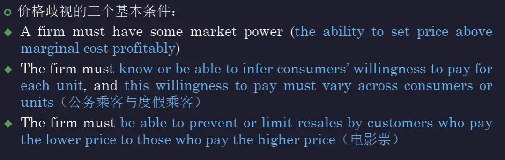
- 具有垄断低位，具有定价权
- 不同的居民家庭有不同的收入情况，医生可以根据其生活环境判断其收入水平，进而推断其支付意愿，对收入水平低的家庭报较低的价格，对收入水平高的家庭报较高的价格
- 医疗服务不可被消费者转卖
产品差别对垄断市场形成的意义#
解释垄断竞争⼚商的两条需求曲线的含义及其相互关系，并进—步 ⽤图说明垄断竞争⼚商的短期均衡和⻓期均衡的形成及其条件。#
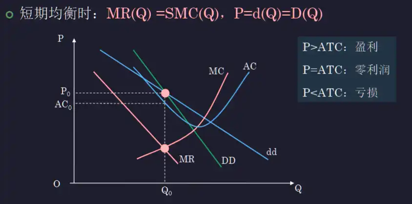
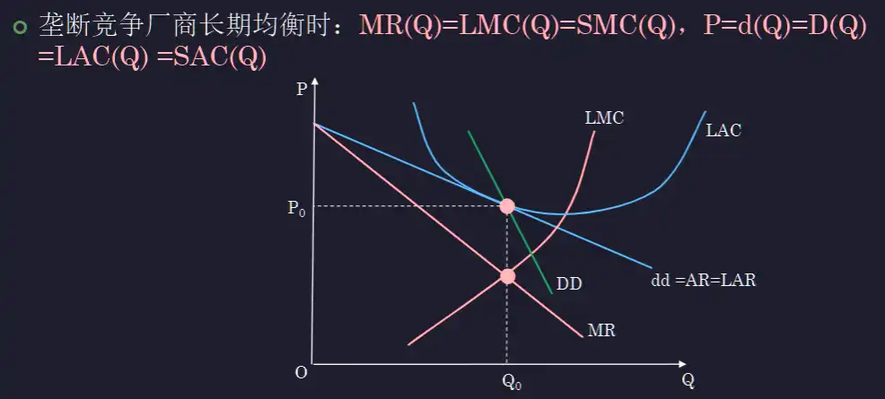
假设在⼀个垄断竞争⾏业中的所有⼚商都被并⼊⼀个⼤⼚商，这个 新⼚商会仍然⽣产那么多品牌吗？或者它会只⽣产⼀种单⼀品牌？请 解释。#
- 会保留受消费者欢迎的品牌，将要素投入这些品牌来实现效率最大化
- 但也不会只保留单一品牌，因为这样将失去部分消费者
为什么参加卡特尔的各⼚商会按相同的价格出售产品⽽不会要求⽣ 产相等的产量？#
- 卡特尔的目的是实现价格控制，达到集团总体利润最大化，所以成员厂商会按照同意的价格去出售产品，保证总体的利润最大化
- 各厂商如果生产相等的产量，由于每个厂商的效率不同，所以供给不同，会导致市场价格不是总体利润最大价格
- 各厂商按照相同的价格出售产品，利润由卡特尔内部按照规则分配
垄断竞争市场中某⼚商的⻓期总成本函数为 LTC＝0.001q3－0.425q2 ＋85q，其中 q 为⽉产量。假设不存在进⼊障碍，产量由该市场的整个 ⾏业调整。如果⾏业中所有⼚商按同样⽐例调整某价格，出售产品的 实际需求曲线为 q＝300－2.5P。试计算：（1）⼚商的⻓期均衡产量和 价格；（2）⼚商主观需求曲线上的⻓期均衡点的弹性；（3）若⼚商 主观需求曲线是线性的，求出⼚商⻓期均衡时的主观需求曲线。#
- 主观需求曲线与 LAC 在长期均衡点相切
- 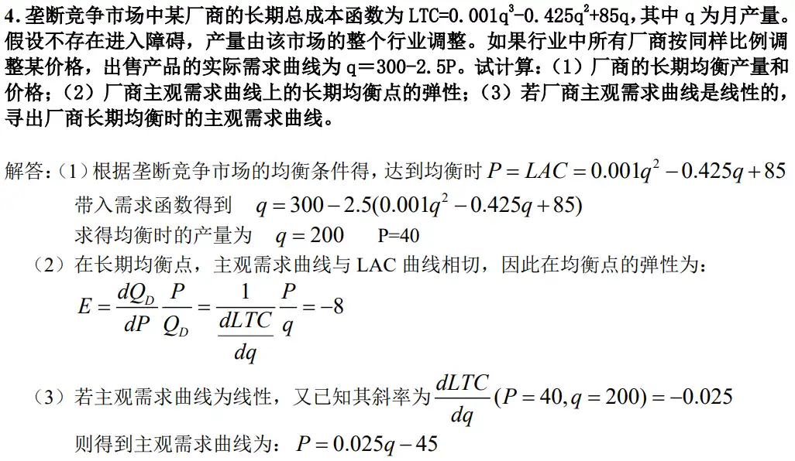
一道题目#
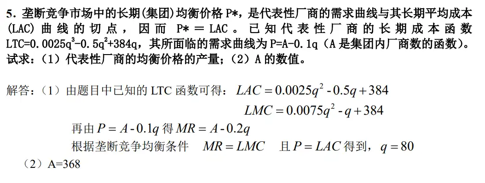
判断所属的市场结构#
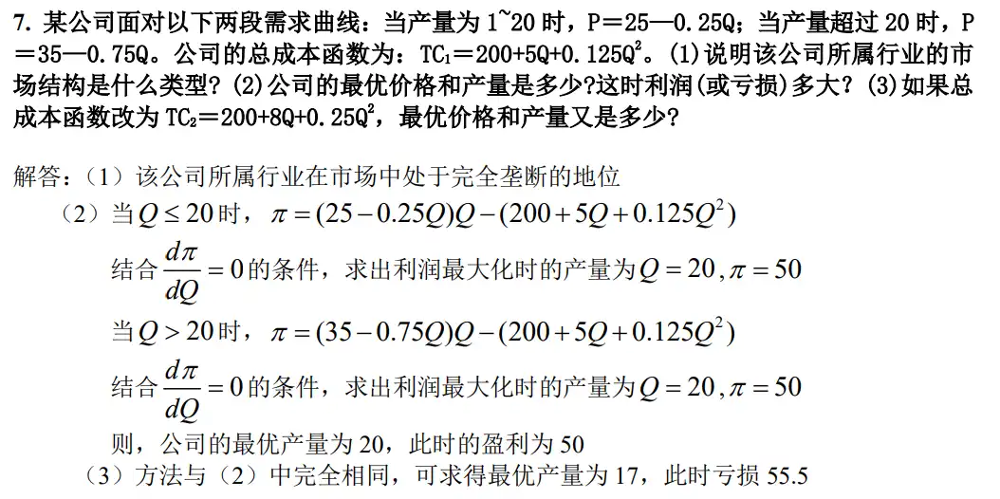
收购行为#
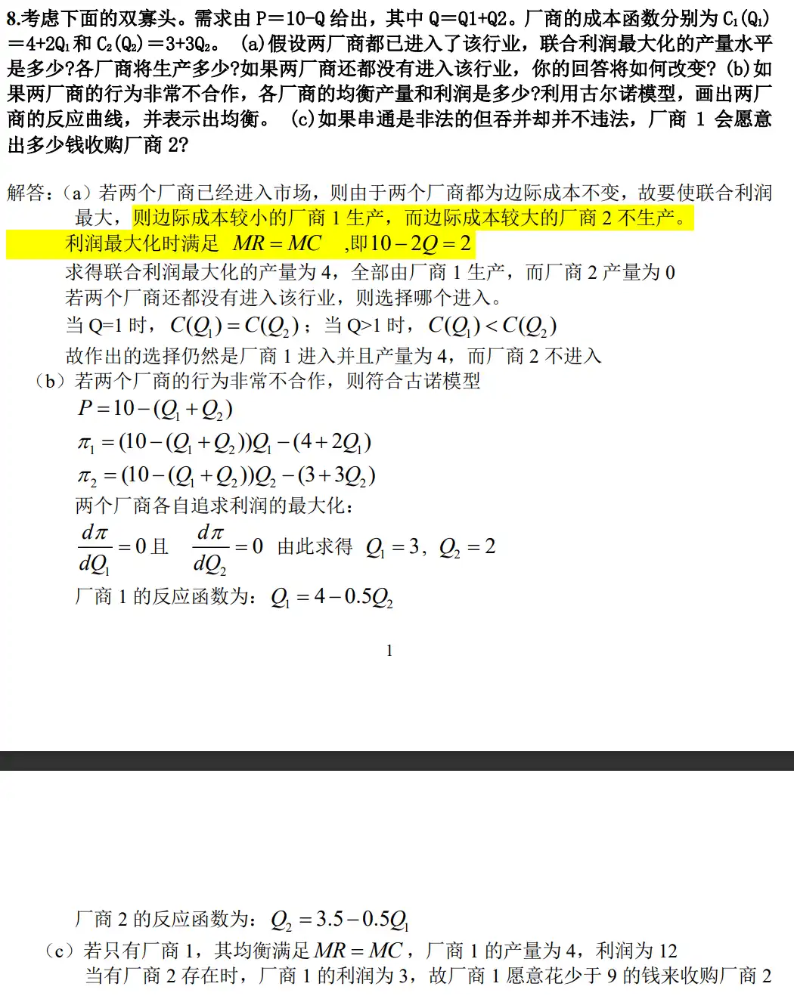
讨论四种市场类型的优缺点#
试论我国经济转型过程中某⼀市场的演进过程#
竞争与垄断哪个更有利于技术创新？#
历年卷简答题#
07-08 冬 A 有答案#
请对 “谷贱伤农”给出经济学分析#
- 画图，画出供给曲线的移动和总收入面积
- （是什么）“谷贱伤农”是指粮食丰收导致粮价下降进而导致农民收入减少的现象
- （为什么）其原因在于，粮食是一种需求缺乏弹性的必需品
- （过程分析）当粮食丰收，粮食供给增加导致粮食均衡价格下降，需求上涨，但由于需求缺乏弹性，农民因需求增加而增加的收益小于因粮价下降减少的收益，从而产生丰收反而造成农民收入减少的现象
请用替代效应与收入效应的关系解释低档商品和吉芬商品的区别#
- 画图，就是需求和供给的图
- （是什么）价格效应分为两种
- 替代效应是指收入不变时，某种商品价格变化引起两种商品之间的相对价格变化而导致对该种商品的需求量的变化
- 收入效应是指某种商品的价格变化导致消费者实际收入从而导致对该商品需求量的变化
- （分析）
- 某种低档商品价格下降的替代效应增加消费者对该商品的需求量，但收入效应却使消费者减少需求量，但是，两种效应的大小不确定
- 如果一种低档商品的收入效应超过了替代效应，那么价格的下降将会导致其需求量的下降，这种商品就是吉芬商品
- 综上，吉芬商品一定是低档商品，但是低档商品不一定是吉芬商品
说明短期成本函数是怎么从短期生产函数获得的 使用数理推导#
- \(Q=f(L, K)\)，其中 K 为固定生产要素，L 为可变生产要素（劳动），故 f 为单变量函数
- 得出反函数 \(L = f^{-1}(Q)\)
- 计算成本 \(TC=wL+rK=wf^{-1}(Q)+rK\)
用图像说明厂商在既定成本下实现产量最大化的最适要素组合原则 %% 与后面的是同一道题%%#
- 画图，等成本线和等产量线
- 说明内外，为什么要取切点
- 斜率相等 \(MP_L/MP_K=w/r\)
简要说明市场失灵的原因#
- （是什么）市场失灵指的是市场机制不能或不能很好地发挥作用导致不能达到帕累托最优状况
- 造成市场失灵的原因主要有
- 垄断：会造成高价低产，损害消费者福利，以及净效率损失
- 信息不完全与不对称：会导致各厂商无法达到要素的最佳配置，或给出最优的价格
- 外部性：会导致社会成本不等于私人成本，导致社会总效用无法最大化
- 公共物品：存在搭便车问题
从经济学角度分析盗版盛行的原因#
- （解释为什么盗版更加便宜）
- 这类信息产品生产的第一单位成本很高，而从第二单位开始边际成本很低
- 正版中为了分摊前期开发、撰写等成本，价格较高
- 盗版只用边际成本定价，所以价格很低
- （讨论消费者的不同需求）在正版和盗版差异很小的情况下，消费者分为两类
- 一类只在意其品质，而不在意价格，他们的需求价格弹性比较小，会选择正版
- 另一类更加在意价格，他们的需求价格弹性比较大，会选择盗版
- （讨论厂商和消费者的选择策略）
- 对于厂商来说，实现利润最大化的方法是同时生产正版和盗版，同时向两个消费者群体销售
- 对于消费者来说，在产品差异较小的情况下，根据个人需求价格弹性选择，可以实现消费者效用最大化
- 结果就是盗版盛行，驱逐正版
有人认为很高的固定成本是厂商亏损的原因，但永远不会是厂商停业的原因，你同意吗，请分析#
- 画图，要进一步画出生产曲线 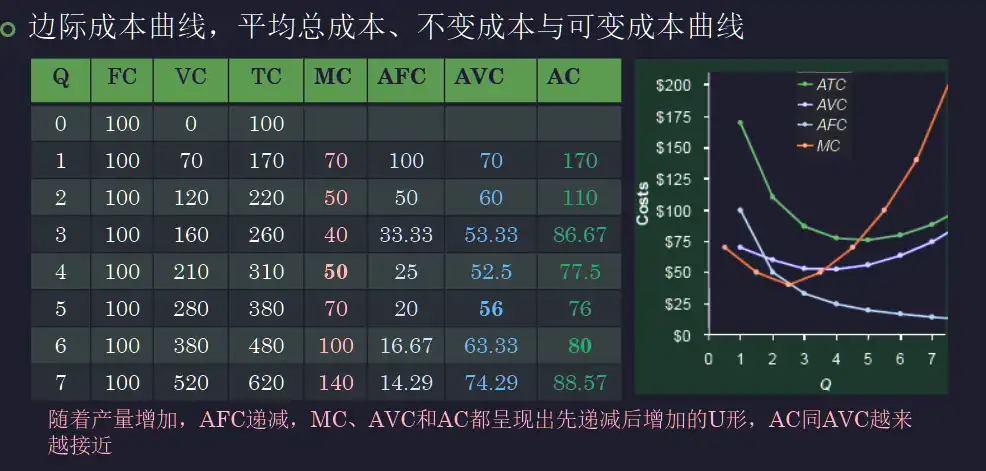
- 同意，厂商停业并不是固定成本决定的，而是取决于价格和平均可变成本的关系
- 当厂商按照 \(P=MR=MC\) 进行利润最大化时：
- 如果 \(P<AVC\)，那么厂商在损失固定成本的基础上会进一步亏损，所以一定会选择停工
- 如果 \(P=AVC\)，那么厂商生产与否对利润没有影响，可以选择生产或停工
- 如果 \(P>AVC\)，那么厂商生产的收益可以弥补固定成本，甚至可能实现盈利。这时，即使不实现盈利，亏损也比不生产要少，所以会选择生产
07-08 冬 B 有答案#
政府实行限制价格的后果#
- 限制价格指的是政府为了防止某种商品的价格上升二规定的低于市场均衡价格的最高限价
- 实行限制价格，会出现供不应求，发生短缺、排队、黑市、强迫替代等
- 为了维持限制价格，政府往往采取配给制
用无差异曲线分析消费者均衡的实现#
- 画图，三条无差异曲线，一条预算约束线
- 说明条件
- 无差异曲线的斜率绝对值与预算线斜率绝对值相等
- \(MRS_{XY}=P_X/P_Y\) 或 \(MU_X/MU_Y=P_X/P_Y\)
画图并解释 SAC, AVC, AFC, SMC 的变化规律和关系#
- 随着产量的增加，AFC 不断下降
- AVC, SMC, SAC 都是先下降后上升
- SAC 曲线是 AVC 与 AFC 的垂直加总，产量越大，越接近 AVC 曲线
- SMC 曲线先后通过 AVC, SAC 曲线的最低点
为什么利润最大化是 \(MR=MC\)#
- 根据 \(\pi=TR-TC\)，为了使得利润最大，求导得到 \(\pi'=MR-MC\) 并取导数为 0
- 得到 \(MR=MC\)
为什么垄断是低效的#
- 画图
- 高价低产
- 长期不在平均成本线上生产，损害消费者福利
- 净效率损失
富人和穷人的货币边际效用哪个高 ？为什么？这对政府收入分配有什么启示？#
- 边际效用递减原则指出，当其他条件不变时，消费者连续消费某种物品的边际效用终将时递减的。
- 由于穷人拥有的货币较少，所以穷人的货币边际效用较高；富人拥有的货币较多，所以富人的货币边际效用较低
- 为了增加全社会的总效用，按照消费者均衡的条件（购买每种物品的边际效用与价格之比相等），政府应向富人征税，通过转移支付的方式给穷人
有人说企业的规模越大越好 ，有人说越小越好，你怎么看？#
- 这两种说法都有欠缺，企业的规模并非越大越好，也并非越小越好，而是要从规模经济的角度找到最适规模，\(Q=\lambda L^\alpha K^\beta\)
- 如企业规模太大，可能导致管理和协调不灵活、生产决策信息传递慢且失真、应变能力弱，造成规模不经济
- 如企业规模太小，可能导致规模经济没有得到较好的发挥，没有足够的规模将生产要素的潜能发挥道极致
22-23 春夏#
如何从个人需求退出市场需求#
- 单个消费者的需求曲线，是在其他条件不变的情况下，其在一段时间内有意愿且有能力购买某商品的数量和商品价格的关系，表现为向右下方倾斜的曲线，如图
- 市场的需求曲线是一个市场中所有消费者群体的需求之和，也表现为向右下倾斜的曲线，对于不同性质的产品有不同的计算方法
- 对于私人享有的产品，市场需求曲线是个人需求曲线的水平加总，即对于每一个价格，将市场上每个消费者的需求量求和
- 对于公共商品（如一座城市对演唱会数量的需求和演唱会门票的关系），若所有的消费者都同时使用这个公共商品，则市场需求曲线和个人需求曲线的垂直加总
用替代效应和收入效应说明低档商品和吉芬商品的区别 见 07-08 卷#
为什么边际技术替代率是递减的#
- 画图 L-K
- （解释定义）边际技术替代率指的是在保持产量不变的情况下，增加一单位技术投入能够减少其他劳动投入的量，例如劳动对资本的边际技术替代率为 \(MRTS_{L, K}=-\frac{\Delta K}{\Delta L}|_{Q 不变}\)
- 边际技术替代率满足边际报酬递减这个经济学原理，主要是因为
- 多数情况下，任何要素之间都存在最适比例，要素之间的替代是有限制的。例如劳动和资本，当劳动数量非常大时，也无法完全替代资本，所以劳动对资本的边际技术替代率随着劳动的增加而递减，最终趋于 0，而资本无法被完全替代
- 等产量线表现为凸向原点的曲线，当任意一种要素数量增加时，其边际产量减少，而另一种要素的边际产量增加
- 所以，这说明在不断增加某一种要素时，这种要素对其他要素的边际替代率时递减的
为什么完全竞争市场利润最大化，既可以是 \(MR=MC\) 又可以是 \(P=MC\)#
- （定义名词解释）完全竞争市场中，每个厂商的市场份额都微不足道，都没有定价权，价格由市场竞争决定。而由于市场自由进出，产品同质，竞争的均衡结果就是所有厂商都没有经济利润，即 \(P=MC\) 可以画图
- 在完全竞争市场中，厂商试图实现利润最大化 \(\pi=TR-TC\)，即求极值点，求导得到 \(MR=MC\)
- 所以，综合上述条件，完全竞争市场中厂商的利润最大化，既可以是 \(MR=MC\) 又可以是 \(P=MC\)
画图说明完全垄断市场的净福利损失#
- 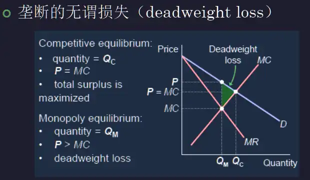
- 由于垄断厂商实现利润最大化均衡为 \(MR=MC\)，厂商会选择这个条件下对应的价格 \(P\) 进行定价
- 这种定价下，垄断厂商抬高了商品价格，虽然最大化了自身利润，但是掠夺了消费者剩余，对社会福利造成损失
- 垄断厂商限制了产品产量，减少生产使社会失去这部分创造价值的机会
- 在图中，净福利损失表现为三角形阴影部分，表示的是既不属于厂商也不属于消费者的社会总价值损失
在解释消费者均衡时，基数效用理论和序数效用理论由什么联系与区别#
- 区别
- 基数效用理论
- 认为效用可以用数字（整数）表示并比较，从而通过边际效用来说明效用最大化
- 消费者均衡条件为，当消费者在所有商品上花的最后一元钱带来的效用相同，计算的消费者均衡为 \(MU_X/MU_Y=P_X/P_Y\)
- 序数效用理论
- 认为效用只能通过排序进行量化比较，通过无差异曲线和预算约束线来说明
- 消费者均衡点为预算约束线和无差异曲线的唯一切点，即 \(MRS_{X,Y}=-P_X/P_Y\)
- 基数效用理论
- 联系
- 两者都用来描述消费者消费商品带来的效用，都可以用来分析消费者偏好
- 两者均把消费者行为理想化为预算条件既定情况下追求最大化效用的过程
- 两者得出的消费者均衡结论是等价的，这是因为 \(MU_X/MU_Y=\Delta X / \Delta Y=-MRS_{X, Y}=P_X/P_Y\)
垄断竞争市场效率低于完全竞争市场，为什么垄断竞争市在现实中普遍而大量存在（画图分析）#
- 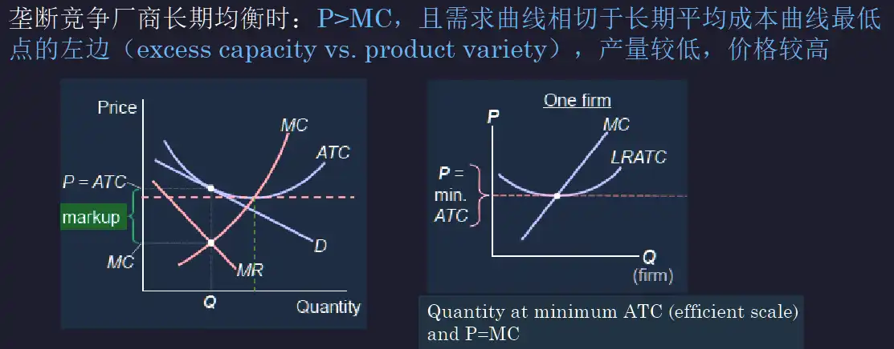
- 垄断竞争市场
19-20 秋冬#
交叉价格弹性的概念 ，如何通过交叉价格弹性来分析两种商品的关系#
- （概念）交叉价格弹性描述的是某种商品价格变动对另一种商品均衡产量的影响，表示为 \(E_c=\frac{dQ_A/Q_A}{dP_B/P_B}\)
- 对于 AB 两种商品，计算 A 的均衡产量对 B 的价格的弹性 \(E_c\)，则
- 若 \(E_c>0\)，说明 B 涨价会导致 A 销量提高，AB 互为替代品
- 若 \(E_c <0\)，说明 B 涨价会导致 A 销量降低，AB 互为互补品
- 若 \(E_c=0\)，则 AB 之间没有关联，AB 互为无关品
完全竞争和垄断竞争的异同#
- 相同点
- 厂商数量都很多，市场份额微不足道
- 市场自由进出
- 两个市场的长期超额利润都为 0，短期超额利润都可正可负，也可为 0
- 不同点
- 完全竞争市场产品完全同质，而垄断竞争市场产品属于同类产品，但有一定差异
- 均衡条件不同
- 完全竞争市场的价格等于边际成本，厂商没有经济利润；垄断竞争市场的定价可以略高于边际成本，厂商可以有经济利润
- 完全竞争市场的产量比垄断竞争市场大
- 完全竞争市场的经济效率比垄断竞争市场高
什么是纳什均衡 ，纳什均衡和占优策略均衡有什么不同之处#
- 纳什均衡是博弈中的一种策略组合，任何参与人单独改变策略都不会得到更高收益，组合中的每一个策略都是对博弈对手策略的最优反应 关键在于让别人没有好处拿
- 占优均衡指的是，无论对手采用什么策略，都能给参与者带来最高收益的策略 占优均衡_百度百科 (baidu.com)
- 两者的主要区别在于定义的不同，由此也可以推断出，占优均衡一定是纳什均衡，但纳什均衡不一定是占优均衡
- 占优均衡：“不管你怎么做，我所做的都是我能做得最好的。”
纳什均衡：“给定你的做法后，我所做的是我能做得最好的。”
某网站通过让乘客自己选择机票的价格 ，然后航司根据这些信息来安排航班，一旦被安排上就无法退票。分析这个策略的可行性。#
- 有利于信息透明。航空公司可以通过乘客的报价来了解市场需求和价格接受度，从而优化航班安排，减少空座率，提高航班的经济效益
- 不同乘客群体对机票的需求弹性不同，愿意支付的价格也不同，这种策略可以吸引需求弹性高的乘客，同时也不是去愿意支付高价的乘客，实际上是实行一级价格歧视，有利于航空公司利润最大化
- 这种策略能够吸引更多乘客来参与，参与的人数越多，收集到的数据也越有价值
该网站又针对汽油采用了同样的策略 ，却失败了，请分析失败的原因#
- 产品的特性不同，汽油作为日常必需品，需求弹性小，需求量变化不大，且汽油存储困难，普通消费者不会因为价格波动而大量囤积
- 汽油市场价格透明度高，汽油价格受全球影响，也受政府调控，消费者不会愿意预订汽油，更不会愿意以比当前市场价格高的价格预订汽油，这样的策略限制了汽油公司的利润空间
- 复杂的出价购买策略不符合消费者购买汽油的习惯，消费者出价的意愿较低
18-19 春夏#
简述规模经济与规模不经济#
- 生产要素同比例增加时，若生产平均成本
- 下降，则企业处于规模经济状态
- 上升，则企业处于规模不经济状态
- 不变，则企业处于规模收益不变状态，也即最适规模
垄断竞争厂商长期均衡条件的推导#
- 对于垄断竞争市场，由于厂商可以自由进入，如果长期均衡利润大于 0，则会有新的厂商进入市场瓜分利润，如果长期均衡利润小于 0，则会有厂商退出市场。因此，垄断竞争厂商的长期均衡利润为 0
- 画图分析（可选？） 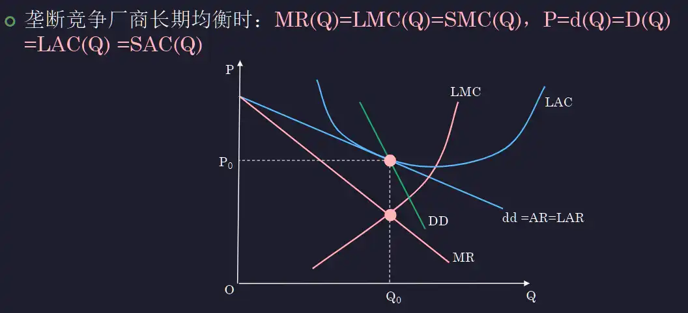
- 因此，根据利润最大化有 \(MR=LMC\)
- 同时，由于没有超额利润，\(P=LAC=AR\)
边际替代率为什么递减#
- 边际替代率（MRS）指的是在维持总效用（产量）不变的情况下，一种物品增加单位数量使得其他物品减少的数量的比率，\(MRS_{X, Y}=-\frac{\Delta Y}{\Delta X}\)
- 当 X 不断增加时，由于存在最适的 X 与 Y 组合，X 产生的边际效用不断减少，所以增加一单位 X 能够替代的 Y 的数量不断减少，所以 X 对 Y 的边际替代率递减
- 在无差异曲线图中，表现为凸向原点，与坐标轴不相交的曲线，在一 X 增大时斜率逐渐减小
单个生产要素的边际报酬递减与规模报酬递增矛盾吗 ？说明理由#
- 不矛盾
- 单个生产要素的边际报酬递减指的是，在其他生产要素投入一定时，不断投入单个生产要素对总产量增加的边际作用递减，这是因为不同生产要素之间存在最优配比，超过这个配比会导致效率降低
- 规模报酬递减指的是，在最适生产要素配比下，等比例地增加每个要素的投入量时，平均成本升高，这可能是因为企业的规模超过最适规模，受到行政管理效率等因素的限制无法继续提升规模报酬
- 所以，这两种现象并不矛盾，因为它们本质上在描述完全不同的情景
长期平均成本的推导#
- 长期生产函数 \(Q=F(L, K)\)
- 长期生产成本 \(LTC=wL+rK\)
- 根据 \(MP_L/w=MP_K/r\) 的原则得到 \(F'_L/w=F'_K/r\)，得到最优要素配比下 L 与 K 的关系
- 带回 1 式，得到 \(L=f(Q),\;K=g(Q)\)
- 所以 \(LAC=LTC/Q=(f(Q)+g(Q))/Q\)
论提高工资能否增加个人劳动量#
- 价格效应包括两种效应
- 收入效应：其他条件不变，一种商品价格变动导致消费者实际收入发生变化，从而消费者对这种商品的需求发生变化
- 替代效应：其他条件不变，一种商品价格的变动导致两种商品之间的相对价格比例发生变化，改变消费者的选择倾向，从而改变对这种商品的需求
- 这个情景中，工作和闲暇就是两种商品，工作者的时间就是总预算。工资提高时，收入效应会使得工人工作更长时间以得到更多工资，同时替代效应会减少工人工作的时间以换取更多闲暇，一般可以表示成如下的图片
- 所以，提高工资不一定能够增加个人劳动量
- 如果收入效应大于替代效应，工人会增加劳动量
- 如果替代效应大于收入效应，工人会减少劳动量
- 根据图片，一般来说，在工资较低时提高工资，可以增加工人劳动量；在工资较高时提高工资，会减少工人劳动量
“虽然很高的固定成本时厂商亏损的原因，但永远不会是厂商停业的原因”你同意这种说法吗，请给出理由#
- 前面有过
- 一定要画图，说明白生产曲线怎么分布的
17-18 春夏#
政府对住房进行价格限制会发生什么效应要画图 前面有过#
- 画图，画出价格低于供需均衡价格
- 说明限制价格的含义：政府为了防止价格上升，设置的低于市场均衡价格的价格上限
- 影响：住房供不应求，排队购房，
发散蛛网的原因要画图#
- 画图，三种图，并给出数学表达式 \(Q_d^t=f(P_t),\;Q_s^t=g(P_{t-1})\)
- 蛛网模型是对有一定生产周期商品的价格和产量失去均衡的一段时间内的市场波动的动态分析
- 根据图像，当且仅当供给曲线的斜率绝对值小于需求曲线斜率的绝对值时，即供给价格弹性大于需求价格弹性时，蛛网模型会发散，市场波动幅度变大
厂商在既定成本下实现最大产量的最是要素组合#
- 生产函数 \(Q=f(x_1, x_2, x_3, \dots, x_n)\)
- 成本函数 \(C=P_1 x_1+P_2 x_2+\dots+P_nx_n\) 为定值
- 使用拉格朗日乘数法 \(L(x_1, x_2, x_3, \dots, x_n, \lambda)=f(x_1, x_2, x_3, \dots, x_n)+\lambda(P_1x_1+P_2x_2+\dots+P_nx_n-C)\)
- 一阶条件 \(\frac{\partial L}{\partial x_1}-\lambda P_1 = \frac{\partial L}{\partial x_2}-\lambda P_2 = \dots = \frac{\partial L}{\partial x_n}=P_1x_1+\dots+P_nx_n-C=0\)
- 由于 \(\frac{\partial L}{\partial x_i}=\frac{\partial Q}{\partial x_i}=MP_{i}\)
- 所以最优条件 \(MP_1/P_1=MP_2/P 2=\dots=MP_n/P_n\)
- 得到 \(x\) 之间的关系，带入 2 式求得所有要素的投入
推导完全竞争厂商的短期供给要画图#
- 利润最大化条件 \(P=MR=SMC\)
- 停止营业点 \(P=SMC=AVC_{min}\)
- 分类分析一下
- 画出折线（曲线）
图示斯威齐模型 微观07 垄断竞争与寡头垄断(1), page 31#
- （解释）斯威齐模型假设寡头企业降低价格，其他企业也会跟着降低价格；寡头企业提高价格，其他企业维持原来的价格。因此，寡头面临的需求曲线是扭折的，价格提高时需求下降多，价格降低时需求增加少
- （解释）斯威齐模型提出价格刚性，指的是寡头垄断市场上的价格比较稳定，成本和需求在一定范围的变化不会引起价格变化
- 由于利润最大化条件 \(MC=MR=P(1+1/E_d)\) 得到 \(P=MC/(1+1/E_d)\)，所以在需求曲线扭折处，价格会发生间断
对于穷人来说，政府发放现金还是等额食品券#
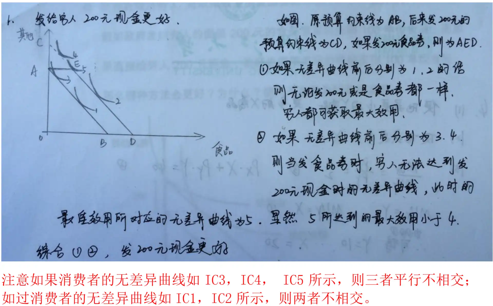
垄断市场经济效率低，为什么垄断竞争市场却很普遍要画图#
17-18 春夏期中#
分析政府实行价格限制的后果画图#
- 什么是价格限制
- 导致供不应求，排队，短缺，黑市交易，强迫替代
用无差异曲线分析消费者均衡的实现要画图#
- 什么是消费者均衡
- 图像，三种情况
用替代效应和收入效应的关系解释低档商品和吉芬商品之间的区别#
画图并解释 SAC, AVC, AFC, SMC 的变化规律和关系#
为什么 \(MR=MC\) 是厂商实现利润最大化的原则#
应用序数效用理论推导出需求曲线#
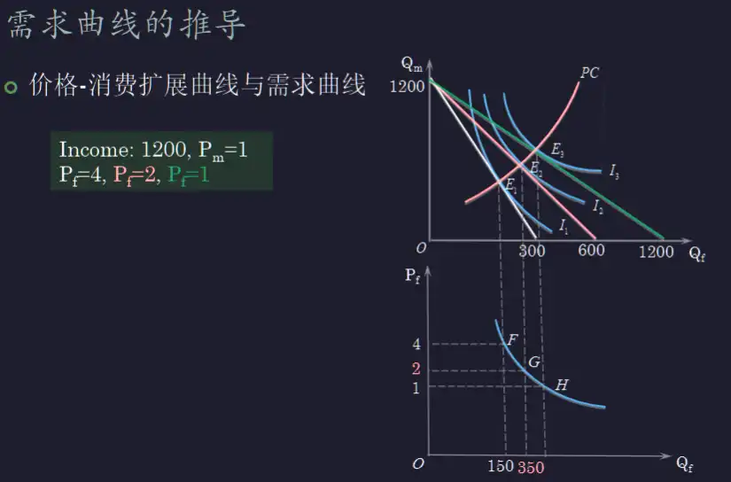
- 画图，消费者不消费和消费两种选择的数量构成关系，存在无差异曲线和预算约束线
- 当商品价格变化时，预算约束线发生变化，与新的差异曲线产生新的切点（均衡点），由此得到价格 - 消费扩展曲线 \(Q_m=f(Q_t)\)
- 经过数学计算 \(P=\frac{M-Q_m}{Q_t}=\frac{M-f(Q_t)}{Q_t}\) 得到了 P 和 Q 的关系
- 将这个曲线画在价格 - 需求量坐标系内，就得到了需求曲线
“虽然很高的固定成本是厂商亏损的原因，但永远不会是厂商停业的原因”你同意这种说法吗？为什么？#
- 短期内，固定成本并不决定是否停业，而价格和最小平均可变成本决定是否停业
- 厂商按照利润最大化 \(P=MR=MC\) 进行供给
- 如果 \(P<AVC_{min}\) .........
11-12 春夏期中 有答案#
什么是理性人假设？试举例说明微观经济学是建立在这个假设基础上的？#
- 理性人假设，假设每一个从事经济活动的人都是利己的，以最小的经济代价去获取最大的经济利益
- 以消费者选择为例，每个消费者都追求自身效用的最大化，直至达到消费者均衡
实证分析和规范分析有什么区别？#
- 实证分析是用理论对社会各种经济现象进行解释、分析、证实和预测。它要说明“是什么”的问题。它研究一个社会所面临的经济问题是如何被切实解决的。它不涉及价值判断问题，即判断某一事物是好还是坏的问题
- 规范分析则是以一定的价值判断作为出发点，提出行为的标准，并研究如何才能符合这些标准。它要说明“应该是什么”的问题，即它研究一个社会所面临的经济问题如何解决
简述无差异曲线的性质#
- 无差异曲线斜率为负，凸向原点
- 无差异曲线离原点越远，效用越大
- 无差异曲线图中的任意两条无差异曲线不能相交
简述需求规律的含义#
- 一般情况下，如果其他条件不变，商品的价格越高，消费者愿意且能够购买商品的数量，即需求量越小
- 反之，商品的价格越低，需求量越大
- 画图满足需求规律的需求曲线向右下方倾斜
- 需求规律给出了消费者对商品需求的基本特征
边际效用递减和边际替代率递减有何关系#
- 边际效用递减是在一定时间内，其他商品消费数量不变的条件下，随着消费者对某一商品消费数量的增加，其每一单位的消费中带来的效用增量是递减的。
- 边际替代率递减是在总效用一定的前提下，随着一种商品消费量的增加，消费者为了得到每一单位这种商品所放弃的其他商品的数量是逐渐递减的。
- 因为随着一种商品消费量的增加，这种商品的边际效用递减，所以消费者为了多获得一单位该商品需要放弃的其他商品数量会减少（该撒谎给你品可以替代的其他商品的数量会减少）。所以，边际效用递减决定了边际替代率递减
简述替代效应与收入效应的含义#
- 替代效应指的是，某一商品价格变动引起了与其他商品之间相对价格的变动，进而导致消费者对该商品的需求量的变动
- 收入效应指的是，某一商品价格的变动引起了消费者实际收入水平的变动，进而导致消费者对该商品需求量的变动
分析“谷贱伤农”背后的经济学原理#
- 画图
- “谷贱伤农”指的是
- 根本原因：农产品缺乏需求价格弹性
- 需求价格弹性是什么？
- 缺乏弹性，则产量增加，价格降低会减少厂商的销售收入
- 原因在于，两个作用，哪个作用更显著
- 结论，所以，农作物增产降价会导致农民销售收入减少
- 对图像进行解释